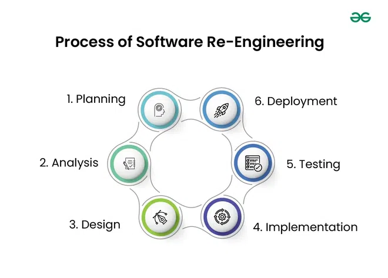
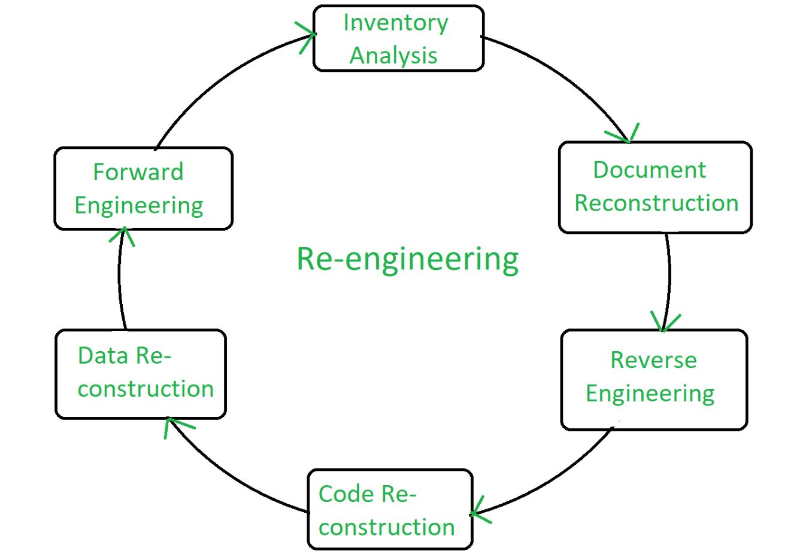

10.6 Software Re-engineering
Software re-engineering is a structured approach to improving legacy systems by examining and altering them to reconstitute the system in a new form with better maintainability. It is distinct from new development and from simple reuse — see §12.1 Reusability for reuse concepts and §10.7 Reverse Engineering for the reverse engineering step within re-engineering.
Definition and scope
- Re-engineering involves examining and altering a system to reconstitute it in a new form while preserving (or deliberately improving) external functionality.
- The primary goal is to improve maintainability — reducing complexity, improving structure, and updating technology without rewriting from scratch.
- Re-engineering is not the same as new development — it reuses existing artifacts (code, data, business logic) rather than starting from a blank requirements document.
- Re-engineering is also distinct from reuse, which incorporates existing components into new systems rather than transforming an existing system in place.

Objectives of re-engineering
- Cost-effective evolution: Extend the useful life of a legacy system at lower cost than full replacement.
- Improve quality and maintainability: Restructure code, update documentation, and modernise architecture to reduce future maintenance effort.
- Support new platforms: Migrate the system to modern hardware, operating systems, or cloud environments.
- Add features: Incorporate new functionality into a restructured codebase that can accommodate change more easily.
- Re-engineering addresses Lehman's law of increasing complexity by actively reducing structural complexity — see §10.2.
Re-engineering process phases
- Planning: Assess the legacy system, define re-engineering scope, estimate cost and schedule, and obtain stakeholder approval.
- Analysis: Understand the current system through reverse engineering, inventory analysis, and document reconstruction.
- Design: Define the target architecture and design the transformed system structure.
- Implementation: Reconstruct code and data according to the new design using forward engineering techniques.
- Testing: Verify that the re-engineered system preserves required functionality and meets quality standards.
- Deployment: Replace or parallel-run the legacy system with the re-engineered version in the production environment.

Six steps of re-engineering
- Inventory Analysis: Catalogue all software assets — modules, data stores, interfaces, and documentation — to determine re-engineering candidates and scope.
- Document Reconstruction: Recreate missing or outdated design and requirements documentation from existing code and stakeholder knowledge.
- Reverse Engineering: Analyse existing code to recover design models, data structures, and control flow — see §10.7.
- Code Reconstruction: Restructure or rewrite code modules to improve readability, modularity, and adherence to modern standards without changing external behaviour.
- Data Reconstruction: Restructure databases and data files — normalise schemas, eliminate redundancy, migrate to new DBMS platforms.
- Forward Engineering: Apply modern design and implementation techniques to produce the transformed system from recovered specifications — see §10.7 Forward vs Reverse Engineering.
Re-engineering vs reuse vs new development
| Approach | Starting point | Outcome |
|---|---|---|
| Re-engineering | Existing legacy system | Same system transformed in place — improved structure, same business function |
| Reuse | Existing components or COTS products | New system built by assembling reusable parts — see §12.1 |
| New development | Fresh requirements specification | Entirely new system; legacy system retired |
Re-engineering cost factors
- Quality of existing software: Well-structured legacy code is cheaper to re-engineer than spaghetti code with no documentation.
- Tool support: Automated reverse engineering and refactoring tools reduce manual analysis effort.
- Extent of data conversion: Migrating large, complex databases to new schemas or platforms adds significant cost.
- Availability of expert staff: Maintainers who understand the legacy domain and technology reduce analysis time and error risk.
- Re-engineering should be undertaken only when cost-benefit analysis shows it is cheaper than continued maintenance or full replacement.
Re-engineering steps
reengineering_steps.pseudo
// Six-step re-engineering process
STEP 1: INVENTORY_ANALYSIS
catalogue all modules, data stores, interfaces, documentation
identify candidates for re-engineering vs retirement
STEP 2: DOCUMENT_RECONSTRUCTION
recreate missing design/requirements docs from code + interviews
STEP 3: REVERSE_ENGINEERING
analyse code → recover design models, data flow, control flow
// see §10.7 reverse_engineering_steps.pseudo
STEP 4: CODE_RECONSTRUCTION
restructure modules; apply modern coding standards
preserve external behaviour (regression tests required)
STEP 5: DATA_RECONSTRUCTION
normalise schemas; migrate to target DBMS; validate data integrity
STEP 6: FORWARD_ENGINEERING
implement target architecture from recovered specifications
deploy re-engineered system; parallel-run with legacy until validatedExam question — Software Re-engineering
Q: Define software re-engineering. How does it differ from new development and reuse? List the six re-engineering steps and process phases. What factors affect re-engineering cost?
Model answer points:
- Definition: examine and alter system to reconstitute in new form; improve maintainability; reuse existing artifacts.
- Not new development (reuses artifacts); not reuse (transforms existing system in place, not assemble new from parts).
- Objectives: cost-effective evolution, improve quality/maintainability, new platforms, add features.
- Process phases: Planning → Analysis → Design → Implementation → Testing → Deployment.
- Six steps: Inventory Analysis → Document Reconstruction → Reverse Engineering → Code Reconstruction → Data Reconstruction → Forward Engineering.
- Cost factors: software quality, tool support, data conversion extent, expert staff availability.